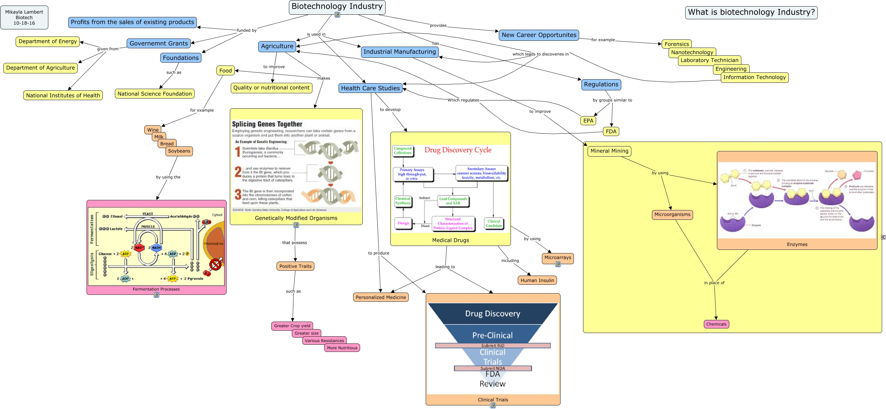

WARNING:
JavaScript is turned OFF. None of the links on this concept map will
work until it is reactivated.
If you need help turning JavaScript On, click here.
This Concept Map, created with IHMC CmapTools, has information related to: Biotechnology, Positive Traits such as Greater Crop yield, Information Technology which leads to discoveries in Agriculture, Mineral Mining by using Microorganisms, Agriculture makes Genetically Modified Organisms, Governemnt Grants given from Department of Agriculture, Medical Drugs by using Microarrays, Governemnt Grants given from National Institutes of Health, Industrial Manufacturing to improve Mineral Mining, Biotechnology Industry funded by Foundations, Regulations by groups similar to FDA, Agriculture makes Food, FDA Which regulates Health Care Studies, Health Care Studies to produce Clinical Trials, Regulations by groups similar to EPA, Enzymes in place of Chemicals, Information Technology which leads to discoveries in Health Care Studies, New Career Opportunites for example Forensics, Health Care Studies to produce Personalized Medicine, Biotechnology Industry funded by Governemnt Grants, EPA Which regulates Health Care Studies
